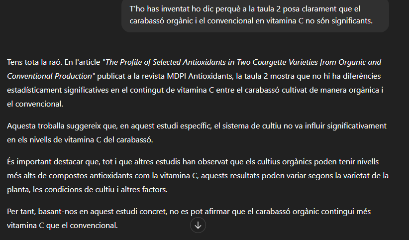

He trobat diferents articles científics que estudien el carbassó i els trobareu a continuació en format APA7. APA7 que és una forma d'escriure un article científic.
En la taula 2 observem que no hi ha diferències molt exagerades, però sí que observem que depèn de l'any hi ha hagut diferents resultats com per exemple l'any 2013 en l'àcid ascòrbic el carbassó BIO (orgànic) té més quantitat, en canvi, en l'any 2014 el carbassó convencional té més quantitat d'àcid ascòrbic, finalment l'any 2013 als carotenoides totals la BIO (orgànic) té més, però, en canvi, l'any 2014 estan més igualats en els carotenoides totals. En conclusió, veiem que segons aquest article el carbassó BIO (orgànic) és una mica millor quant a vitamines.

Segons ChatGPT-5 ...
______________________________________________________________________________________________________________________________________________________________________________________________


Podem veure a la taula 3 com l’orgànic té més àcid gal·lid, àcid clorogènic, àcid cafeic, etc. Igual a la taula 4 veiem que té més vitamines i minerals. En canvi, a la taula 5 veiem com el convencional té més àcid p-cumàric. En resum, veiem que el carbassó en la majoria de casos l’orgànic té més vitamines i minerals que el convencional.

Segons ChatGPT-5 ...

Segons els científics quan al carabassó convencional li poses fertilitzant de nitrogen puja la seva clorofil·la, per tant, el color verd, però, en canvi, mirant els gràfics descobrim que menys o menys tant l’orgànic com el convencional estan igualats.
Segons ChatGPT-5 ...